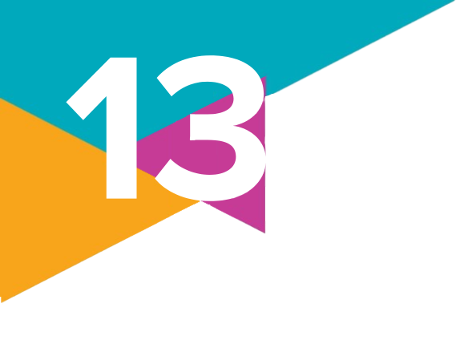

Movimentos sociais
1.
O que é um movimento social? Quais são as principais características desses movimentos?
2.
Por que a Sociologia passou a utilizar a denominação "novos movimentos sociais" a partir da década de 1960? Quais eram as diferenças entre eles e os movimentos anteriores?
3.
(UFGD-MS – 2021)
Os movimentos sociais no campo e na cidade são atores fundamentais da sociedade civil organizada, desempenhando papel importante para a estabilidade da democracia. Sobre a relação dos movimentos sociais com o Estado e com os poderes instituídos, assinale a alternativa correta.
a) Os movimentos sociais, exercendo constantemente a oposição, almejam a tomada do Estado a qualquer tempo.
b) Os movimentos sociais resultam de um fracionamento do Estado, ora como sua parcela orgânica, mas independente, ora como dissidência.
c) Os movimentos sociais são atores políticos, que buscam orientar suas ações e estruturas de forma autônoma em relação a governos e partidos.
d) Os movimentos sociais, com seu desenvolvimento, visam a substituir o Estado, tomando para si, cada vez mais, a execução das políticas públicas e a condução política dos partidos.
e) A perspectiva de todo o movimento social é institucionalizar-se, organizando-se em estruturas como sindicatos ou partidos.
Os movimentos sociais no campo e na cidade são atores fundamentais da sociedade civil organizada, desempenhando papel importante para a estabilidade da democracia. Sobre a relação dos movimentos sociais com o Estado e com os poderes instituídos, assinale a alternativa correta.
a) Os movimentos sociais, exercendo constantemente a oposição, almejam a tomada do Estado a qualquer tempo.
b) Os movimentos sociais resultam de um fracionamento do Estado, ora como sua parcela orgânica, mas independente, ora como dissidência.
c) Os movimentos sociais são atores políticos, que buscam orientar suas ações e estruturas de forma autônoma em relação a governos e partidos.
d) Os movimentos sociais, com seu desenvolvimento, visam a substituir o Estado, tomando para si, cada vez mais, a execução das políticas públicas e a condução política dos partidos.
e) A perspectiva de todo o movimento social é institucionalizar-se, organizando-se em estruturas como sindicatos ou partidos.
4.
Com base nas teorias da Escola de Chicago e de outros autores estadunidenses sobre movimentos sociais, indique no caderno qual das seguintes afirmações é correta.
a) Segundo a Escola de Chicago, os movimentos sociais são sempre resultado de conflitos entre classes sociais antagônicas.
b) Talcott Parsons via os movimentos sociais como resultado de sociedades em processo de mudança, podendo ser tanto promotores quanto resistentes a essas mudanças.
c) Charles Tilly defendia que as ações coletivas são sempre espontâneas e motivadas pelo bem comum, sem qualquer influência de ganhos individuais.
d) Mancur Olson argumentava que os movimentos sociais surgem apenas em sociedades desorganizadas e instáveis, com alta marginalidade social.
e) Herbert Blumer acreditava que os movimentos sociais só se tornam organizados e estruturados após décadas de existência.
a) Segundo a Escola de Chicago, os movimentos sociais são sempre resultado de conflitos entre classes sociais antagônicas.
b) Talcott Parsons via os movimentos sociais como resultado de sociedades em processo de mudança, podendo ser tanto promotores quanto resistentes a essas mudanças.
c) Charles Tilly defendia que as ações coletivas são sempre espontâneas e motivadas pelo bem comum, sem qualquer influência de ganhos individuais.
d) Mancur Olson argumentava que os movimentos sociais surgem apenas em sociedades desorganizadas e instáveis, com alta marginalidade social.
e) Herbert Blumer acreditava que os movimentos sociais só se tornam organizados e estruturados após décadas de existência.
5.
Leia o trecho a seguir que aborda características dos movimentos sociais.
Esses movimentos [sociais atuais] assumem novas formas: manifestações e ocupações de massa e repentinas. Com variações em função das situações, apresentam-se como movimentos antiautoritários e horizontais. Mesmo que vejamos aparecer líderes e porta-vozes, de fato nenhum deles os controla. Por sua forma de organização e uso do digital, são movimentos da era digital, mesmo quando essa característica não é suficiente para defini-los.
Com base no que você estudou neste capítulo, cite três exemplos de movimentos sociais que apresentam as características mencionadas no texto.
Esses movimentos [sociais atuais] assumem novas formas: manifestações e ocupações de massa e repentinas. Com variações em função das situações, apresentam-se como movimentos antiautoritários e horizontais. Mesmo que vejamos aparecer líderes e porta-vozes, de fato nenhum deles os controla. Por sua forma de organização e uso do digital, são movimentos da era digital, mesmo quando essa característica não é suficiente para defini-los.
MASSIAH, G. Os movimentos sociais na era digital. Le Monde Diplomatique Brasil, São Paulo, 31 jan. 2020. Disponível em: https://diplomatique.org.br/os-movimentos-sociais-na-era-digital/. Acesso em: 31 ago. 2024.
Com base no que você estudou neste capítulo, cite três exemplos de movimentos sociais que apresentam as características mencionadas no texto.
6.
Elabore uma lista com os principais movimentos sociais brasileiros abordados ao longo do capítulo e mencione pelo menos uma conquista decorrente da mobilização de cada um deles.
7.
Você participa ou já participou de algum movimento social ou mobilização coletiva? Se sim, quais foram os motivos que levaram você a essa participação? Descreva como é ou foi essa experiência.